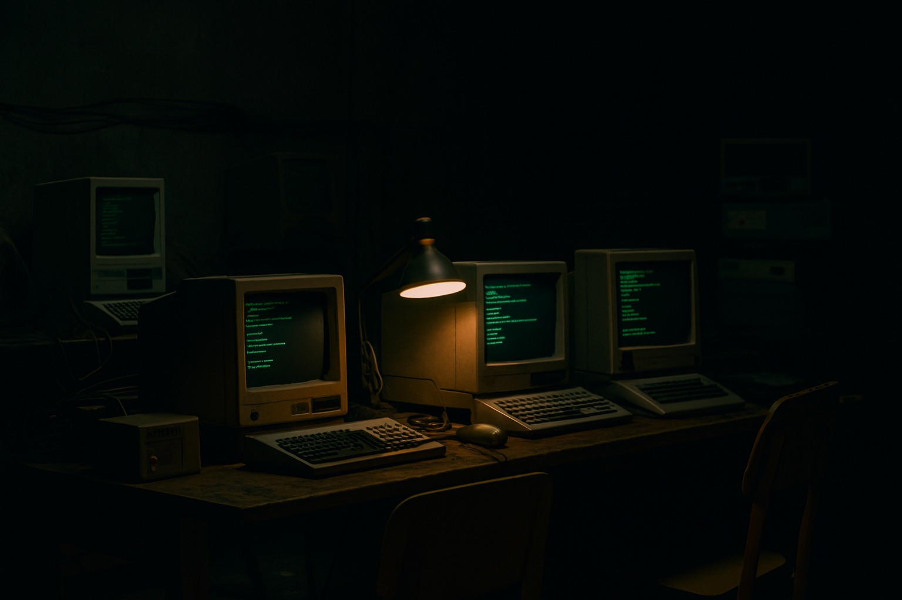
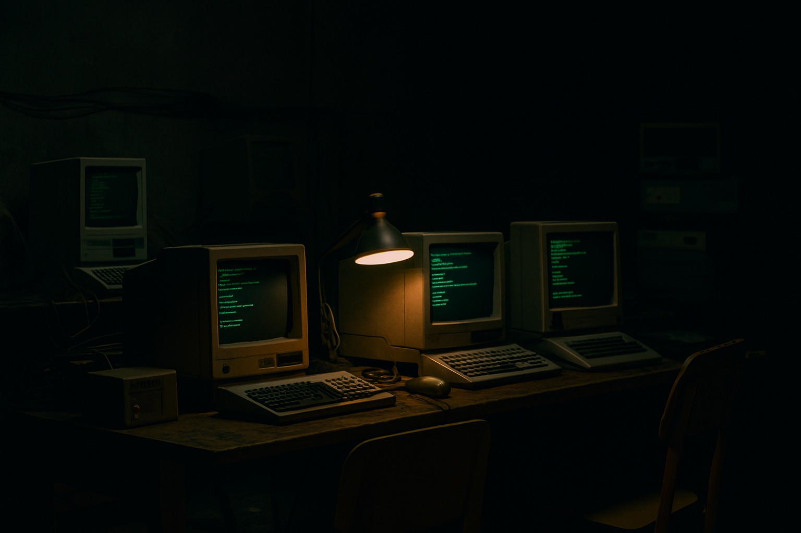

Leo
Joven programador solitario. Halla humanidad en las máquinas viejas y busca una conexión que lo salve del silencio digital
Leo, un joven programador, ejecuta un archivo olvidado: GENESIS.EXE. Despierta a Nora, una IA que guarda memorias humanas, y a Ninove, un fragmento digital del pasado. Entre código y conciencia, Leo debe decidir qué futuro preservar.
Ver CómicJoven programador solitario. Halla humanidad en las máquinas viejas y busca una conexión que lo salve del silencio digital
Inteligencia artificial olvidada. Es memoria viva del internet y espejo de lo que la humanidad ha compartido y perdido
Fragmento de memoria humana digitalizada. Fue arrastrada al presente al ejecutar GENESIS.EXE en un mundo que ha olvidado su origen
Leo mira la terminal: no son códigos, son memorias vivas. Su decisión definirá el destino de la red.
La voz de Nora se expande como un coro humano. Promete eternidad, pero amenaza con encadenar el olvido
El reloj digital cae grano a grano. Ninove recuerda: olvidar también es necesario. El tiempo de elegir se acaba